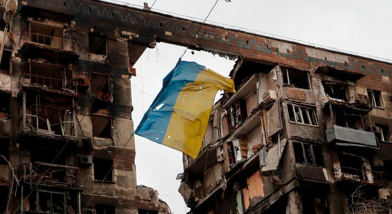

Rafael Rodrigues
13 de Abril de 2022
Uma grande guerra está ocorrendo na Europa oriental nos dias atuais, um conflito entre o grande exército da Rússia contra o exército e a população Ucraniana, um embate que está criando problemas econômicos tanto na Europa quanto no mundo.
Mas por que o presidente russo Vladimir Putin decidiu invadir o território ucraniano em 24 de fevereiro de 2022?
Há muitas justificativas para isso, como por exemplo, a possibilidade de adesão da Ucrânia à aliança militar, a contestação ao direito da Ucrânia à soberania independente da Rússia, o desejo de Vladimir Putin de restabelecer a zona de influência da União Soviética e a expansão da Otan pelo Leste Europeu.
Em entrevistas e discursos, Putin enfatizou sua visão de que a Ucrânia faz parte da Rússia, cultural, linguística e politicamente. Enquanto parte da população de língua russa no leste da Ucrânia sente o mesmo, uma população de língua ucraniana mais nacionalista no oeste tem historicamente apoiado uma maior integração com a Europa.
Ucranianos rebatem a tese de que a Ucrânia é um país artificialmente criado pela União Soviética, eles argumentam que a origem comum não se sobrepõe aos séculos em que a identidade ucraniana se desenvolveu de forma independente, incluindo a invasão por diferentes povos e desenvolvimento de idioma próprio.